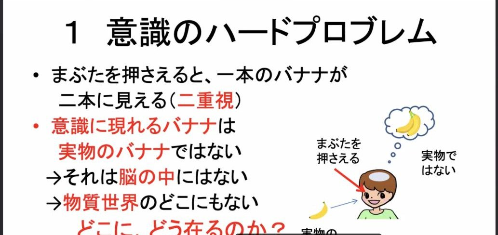
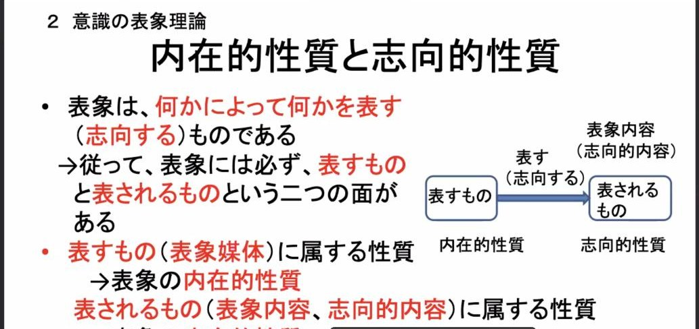
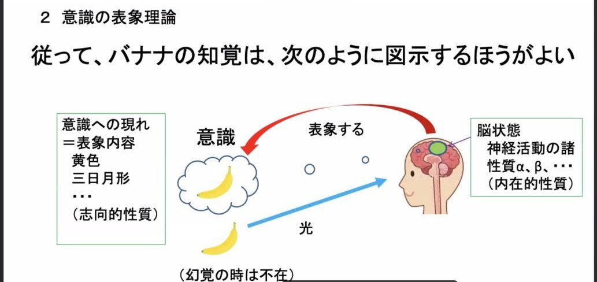
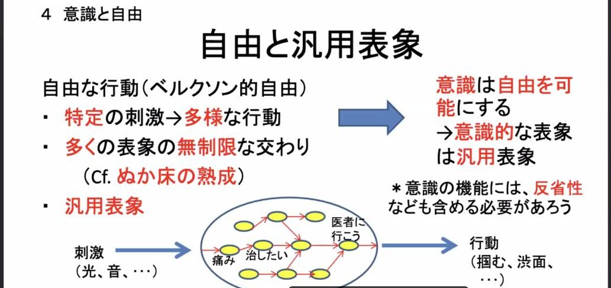

AIまとめ（登壇者本人の確認なし）
Zoomの自動字幕と、それをもとにした実況投稿から、AIがまとめ、別のAIが字幕と突き合わせて確認したものです。登壇者ご本人の確認は受けていません。字幕の誤認識などにより、内容に誤りを含むことがあります。スライド画像は配信画面から切り出したものです。
信原さんは、意識は表象であり、表象は機能にほかならない、という機能主義の立場から、「意識とは汎用表象を用いた活動である」と主張しました。講演は、①意識のハードプロブレム、②意識の表象理論、③表象の機能主義的理論、④意識と自由、の順に進みました。
1. 意識のハードプロブレム

配信画面より
- まぶたを押さえると、一本のバナナが二本に見える（二重視）。意識に現れる二本目のバナナは、実物でもなく、脳の中にもない。物質世界のどこにもないそれは、どこに、どう在るのか。
- 哲学的ゾンビ：赤いトマトを見て「赤い」と言うのに、意識には赤い色が現れていない人。しかも、クオリアを持つ人と物的にまったく同じ（振る舞いも脳のあり方も同一）である点が重要。
- なぜある種の脳状態にはクオリアが伴うのか。脳科学だけでは解決できず、哲学的な考察が欠かせない。これが意識のハードプロブレムであり、要するに「クオリアとは何か、哲学的ゾンビが可能であるような非物質的なものなのか」という問題だ、と整理した。
2. 意識の表象理論

配信画面より
- 表象には「表すもの」と「表されるもの」の二つの面がある。表象媒体の「内在的性質」と、表象内容の「志向的性質」の区別が決定的に重要。
- 「犬が走る」という文でいえば、文字数や主語・述語の形式は文そのものの内在的性質で、「犬である」「走る」は表象内容の側の性質。同じように、黄色いバナナを見るときに意識に現れる黄色のクオリアは表象内容（志向的性質）に属し、それを表しているのは脳状態である。

配信画面より（意識に現れるもの＝表象内容、それを表すのは脳状態）
- 意識に現れるバナナは実物のバナナを表している、と考えがちで、哲学でも長くそう考えられてきたが、そうではない。意識に現れるものこそが表象内容であり、それを表す媒体は脳の活動にほかならない。幻覚のときは実物がなくても同じ構図になる。
3. 表象の機能主義的理論
- 二重視の二本目のバナナも、「地球は平らだ」という偽の信念の内容も、物質世界のどこにもない。表象内容を存在者として認めると、どこにどう在るのかという深刻な問題が生じ、可能的存在者を持ち出しても困難が残る。
- 言葉の意味も同じ問題を抱えている。意味を存在者として持ち込まずに説明する試みとして、ウィトゲンシュタインの意味の使用説を紹介。言葉の意味とは、言語ゲームにおけるその言葉に特有の使用のことだ。
- 言葉の使用とは言語ゲームにおける働き、つまり因果的な役割（機能）のことなので、使用説は意味についての機能主義的な理論だといえる。
- これを心の状態に当てはめる。「コップが見える」という知覚は、目の前にコップがあるときに生じ、コップがあるという信念や、手を伸ばす行動を引き起こす。その機能から表象内容が導ける。知覚や信念が偽になるのは、その機能が誤作動を起こすときである。
4. 意識と自由：汎用表象

配信画面より
- 同じ表象内容でも、意識的なものとそうでないものがある。その違いも機能から説明すべきで、手がかりは自由との関係だ。（「汎用表象」は general と specific の対比から来た、講演者自身の言葉）
- 意識的でない例として、「オシツオサレツ表象」（スライドではR・G・ミリカンの概念として紹介）を挙げた。ハエを見ると生じ、舌を伸ばしてハエを捕らせる表象のように、認識の面と行動の面を兼ね備え、特定の刺激に特定の行動を起こすことだけに使われる「専用表象」であり、自由ではなく、したがって意識的でもない。
- 自由な行動では、同じ刺激から多様な行動が可能で、多くの表象が制限なく交わり合う。「ぬか床の熟成」のようなこの過程を担うのが「汎用表象」であり、意識的な表象の条件の一つは汎用性である。ただし反省性なども必要で、意識はおそらく家族的類似の概念だろう、と述べた。
5. 質疑応答から
- 最初の質問は、フランキッシュのイリュージョニズム（幻想主義）に近いのでは、というもの。応答は、クオリアを消去するのではなく機能に還元できるとする還元主義の立場だ、という趣旨で、デネットの議論は消去主義とも還元主義とも読める、という話も出た。
- 科学も哲学も言語で「表す側」にとどまるので、表象主義に立つと表象内容そのもの（クオリア）は理論化できず、科学理論に含めるべきではないのでは、という質問が出た。応答は、すべて記号のレベルで話しているという意味ならその通りだ、という趣旨だった（字幕が途切れがちで、応答の細部は確認しきれない）。
- 自由とは反射の一対一対応が一対多になっただけなのか、という質問には、決められた選択肢のどれかになるというだけでは自由とは言えず、ぬか床の熟成のような表象どうしの相互作用から行動が定まって出てくるのが自由な行動であり、どんな相互作用なら自由なのかは研究者に突き止めてほしい、という趣旨の応答があった。続けて、茂木さんの講演で出たノイズとの関係を問われ、ノイズによって多様になったのなら自由ではなく、熟成のような過程を経ていれば自由だ、と応じた。
- チャーチランドの消去的唯物論との違いを問われ、クオリアについて消去主義ではなく還元主義をとる点で決定的に違う、と答えた。また、表象が正しいとは表象内容どおりに世界があることだが、表象を離れて世界を捉えることはできないので、その確認は行動がうまくいくかどうかなどによる間接的なものになる、という議論も出た。
- 豆腐で栓抜きは作れないが硬い金属なら作れるように、表象の機能にふさわしい媒体とそうでない媒体があり、多重実現が可能でも、どんな材質でもよいわけではない、という趣旨の応答があった。どの動物やLLMに表象内容があるかについての確かな答えは、科学的な探求を待つ、とした。
- 最後に、グローバル・ワークスペース理論との関係を問われ、汎用表象がグローバル・ワークスペースに似ているというのはその通りで、それを意識しながら汎用表象と言っている、と答えた。